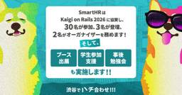
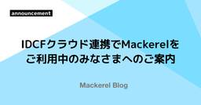

直近1週間の更新時系列
10/11 (日)

「薬屋のひとりごと」劇場版、4日連続キャラPV公開！第一弾は猫猫＆壬氏一行 シネマトゥデイ
シネマトゥデイ
カルチャー
カルチャー
本日（11日）から14日までの4日間連続で、『劇場版 薬屋のひとりごと 亡妃の秘宝』（12月11日公開）に登場するキャラクターたちのPVを公開。第一弾として猫猫・壬氏一行が公開された。
27分前

オランウータンの母親は子どもに「遊び相手」を探してあげていたと判明 1
1 ナゾロジー
ナゾロジー
発見
サイエンス
休日の公園では、子どもたちを遊ばせながら、親どうしが「次はいつ会おうか」と相談している姿をよく見かけます。 同じ年ごろの仲間と遊ぶことは、子どもの成長に欠かせないものと考えられています。 ところが森の中には、その仲間に出会うこと自体がとても難しい動物がいます。 大型の類人猿(ヒトに近いサルのなかま)の中で、もっとも単独で暮らすオランウータンです。 母親と子どもだけで森を移動する彼らの子どもは、どうやって遊び相手と出会っているのでしょうか。 マックス・プランク動物行動研究所などのチームが野生のオランウータンを15年にわたって追った研究から、子どもの遊びをめぐる母親たちのある行動が見えてきました…
1時間前

『踊る大捜査線』30年愛される“青島コート”の秘密 続編のたびに4～5着製作、色味＆涼感加工もアップデート シネマトゥデイ
カルチャー
カルチャー
『踊る大捜査線』シリーズで織田裕二が演じる主人公・青島俊作を象徴するものとして真っ先に思い浮かぶのが、モスグリーンのモッズコートだ。
1時間前

今夜「VIVANT」黒須たちが囚われた牢獄まで辿り着く【第20話あらすじ】 シネマトゥデイ
カルチャー
カルチャー
日曜劇場「VIVANT」（TBS系）の第20話（第2シーズン第10話）が、11日よる9時から放送される。
2時間前

鈴木伸之「救命病棟24時」で5年ぶり月9出演！詳細は謎のキーパーソンに
シネマトゥデイ
発見
カルチャー
江口洋介と松嶋菜々子がダブル主演を務めるフジテレビ系10月期の新・月9ドラマ「救命病棟24時」（10月12日スタート、毎週月曜21時～※初回15分拡大）に、鈴木伸之が出演することが発表された。
3時間前
10/10 (土)

ADHDの人は便秘や過敏性腸症候群などの「腸の問題」を抱えやすいことが約200万人の分析で判明 3 GIGAZINE
GIGAZINE
はてブ3 · 発見
サイエンス
注意欠如多動症(ADHD)は不注意や衝動性を特徴とする発達障害であり、世界全体では成人の2～4％がADHDを持っているといわれています。イギリスのウォーリック大学が主導した研究では、ADHDを持つ人は便秘や過敏性腸症候群(IBS)、下痢といった胃腸症状を経験する可能性が著しく高いとの結果が示されました。
9時間前

痩せ薬を使う人ほど「体の老化」が遅いと製薬会社が発表 2 ナゾロジー
サイエンス
サイエンス
健康診断の紙を受け取ると、まず体重の欄を見てため息をつくのが毎年のお決まりです。 体重を減らす痩せ薬「GLP-1薬」は、いまや世界で最も売れている薬になりました。 ところがこの薬について、体重計では測れない「体の年齢」との関係を調べた報告が出てきました。 デンマークのノボ ノルディスクとイーライリリーという製薬大手2社が、老化の治療法を探る学会で、自社の痩せ薬と老化の関係を発表したのです。 では、痩せ薬は体重だけでなく、体の年齢にも何か影響を与えていたのでしょうか。 この話題の詳細は2026年10月6日に『MIT Technology Review』にて公開されました。 目次 体の年齢…
14時間前

無料のオープンソースEPUB・PDFリーダー「Readest」、Windows・Linux・macOS・Android・iOS・ブラウザ・KOReaderでハイライト・メモ・分割画面読書・AIテキスト読み上げ・AI自動翻訳・クラウド同期が可能 5 GIGAZINE
はてブ5 · 新しく出た
AI・LLM / 設計・SRE・基盤 / フロントエンド・デザイン
電子書籍のハイライトやメモだけでなく、2冊を横並びにする分割画面読書・AI音声読み上げ・文章や書籍全体の翻訳・端末間のクラウド同期まで利用でき、Windows・Linux・macOS・Android・iOS・ブラウザに対応する「Readest」が公開されています。
14時間前

コラーゲンサプリの効果を示す研究に「大きな欠陥」があったと判明 ナゾロジー
発見
サイエンス
ドラッグストアの美容コーナーには、「ハリ」「うるおい」といった言葉を添えたコラーゲンのドリンクや粉末がずらりと並んでいます。 コラーゲンを口から摂ると肌の老化に良い、という考えは、美容の世界ですっかり定着しているように見えます。 ところが科学の世界では、飲むコラーゲンが肌に効くかどうかは、いまも意見が分かれ、証拠も限られているテーマです。 そこで近年は、たくさんの研究結果をまとめて「結局どうなのか」を判定しようとする分析が行われてきました。 では、その「まとめ」は本当に信頼できるものだったのでしょうか。 今回、研究チームが、飲むコラーゲンの効果をまとめた主要な分析を、一から点検し直しました。…
17時間前

「角醒ハンター オメガホーン」ギリコVSバーサー、因縁のハンターバトル【第12話あらすじ】 1 シネマトゥデイ
カルチャー
カルチャー
“赤いヒーロー”が活躍する東映特撮シリーズ「PROJECT R.E.D.」第2弾「角醒ハンター オメガホーン」の第12話「取り戻せ！ギリコVSバーサー！」が、11日午前9時30分よりテレビ朝日系にて放送される。
1日前

バックアップはなぜ難しいのか、ファイルをコピーするだけでは済まない理由とは？ 38 GIGAZINE
はてブ38 · 設計判断・移行
故障や操作ミスなどによって大切なデータが失われることがあるため、日頃からバックアップを取っておくことは重要です。しかし、データのバックアップは単にファイルを別の場所にコピーするだけでは十分とは限りません。ソフトウェアエンジニアのアレクサンダル・フィリポフスキー氏が、バックアップの仕組みを整えるにつれて増えていく課題を、自身の体験を交えて説明しています。
1日前

磯村勇斗＆末澤誠也、初共演で芽生えた兄弟のような絆 衝撃作『mentor』で役者の魅力実感
1 シネマトゥデイ
カルチャー
カルチャー
吉田恵輔監督（「吉」はつちよしが正式表記）による最新作『mentor』でW主演を果たし、少年時代の過ちを抱えて生きる幼馴染を演じた磯村勇斗と末澤誠也（Aぇ! group）。
1日前

『ゴジラ-0.0』山崎監督に憂いなし 前作大成功のプレッシャー一蹴「またすげぇ映画作りゃいい」 2 シネマトゥデイ
カルチャー
カルチャー
スクリーンに投影されたゴジラの姿に合わせて、猛烈な咆哮が響き渡る。
1日前
10/9 (金)
ゲームの起動を爆速にする「ASD」、Intel、NVIDIA、QualcommのWindows 11機にも拡大へ／初回起動時のシェーダーコンパイルを約95％短縮。「Gears of War: E-Day」でお披露目 3窓の杜
はてブ3 · 数字のインパクト
米Microsoftは10月1日（現地時間）、「高度シェーダー デリバリー」の提供範囲をIntel、NVIDIA、QualcommのWindows 11デバイスにも拡大すると発表した。
2日前

geohash について知ったので、パン屋巡りに使えないか考えてみた 1 エムスリーテックブログ
エムスリーテックブログ
設計・SRE・基盤 · 組織・マネジメント・QA
設計・SRE・基盤 / 組織・マネジメント・QA
※ 記事とは何の関係もない、夏の旅行で撮った馬の写真 メディカルマーケティングオートメーションチームの山本（@hiro_o918）です。 本記事はメディカルマーケティングオートメーションチーム(Unit2)のブログリレー2日目の記事です。 前回は中村さんの「Rustで自己言及プログラムであるQuineを作っていく」でした。 最近、場所をハッシュ値で持つ geohash という概念を学びました。休日にたまにパン屋巡りをするのですが、これを応用すれば効率的にパン屋を巡れるんじゃないかと思いついたので、考えたことを書いていこうと思います。 ただ、人間の胃には限界があるため、実際にこのとおり巡るのは難…
2日前

［連載小説5］説明会後に内部通報が急増 1兆円超案件の現場からの相談も (氷層) 日経ビジネス電子版 最新記事
日経ビジネス電子版 最新記事
仕組みを掘る
ビジネス・公共 / カルチャー
。その一文を読みながら、森村は6年前の買収案件を思い出していた。十分な調査を求めながら、成長機会を逃すという理由で退けられた案件だった。あの時も、最初にあったのは確信ではなく、小さな違和感だった。
2日前

ソフトウェアサプライチェーン攻撃演習から学ぶ、インシデント対応に必要な5つの視点 2 LayerX エンジニアブログ
LayerX エンジニアブログ
設計・SRE・基盤 · セキュリティ
設計・SRE・基盤 / セキュリティ
こんにちは、LayerX Fintech事業部から三井物産デジタル・アセットマネジメント（以下、MDM）に出向しているs.masです。 皆さん、AI を活用されていますか。非常に便利な反面、昨今は AI によってセキュリティの前提も変化してきていると認識しています。 たとえば 2026年5月には、npm で広く使われているライブラリ群の正規バージョンが改ざんされ、インストールしただけで開発者の認証情報が盗まれるワーム型の攻撃が公開されました。 この検体は、盗んだ認証情報で別のパッケージを次々と再公開して広がるだけでなく、Claude Code や VS Code の設定ファイルに自分自身を書き…
2日前

これには驚いた！ 今度はExcelやWordやPower Pointをオープンソースで再構築、Win、Mac、Linux、Web対応で無料 248 コリス
コリス
はてブ248 · 新しく出た
設計・SRE・基盤 / フロントエンド・デザイン
今週はCrafting Appsの記事ばかりになっています。 Photoshopを再構築したオープンソース版「PhotoCraft」の日本語対応など、Adobeのアプリ7種類を毎日のようにアップデート
2日前

SmartHRはKaigi on Rails 2026に協賛し、30名が参加、3名が登壇、2名がオーガナイザーを務めます！ そして、ブース出展と、学生参加支援、事後勉強会も実施します!! 渋谷でハチ合わせ!!!  SmartHR Tech Blog
SmartHR Tech Blog
SmartHRは、2026年10月16日、17日に東京・ベルサール渋谷ガーデンで開催される「Kaigi on Rails 2026」に協賛します！ 当日はブースを出展し、社員30名が現地参加します。また、関係者3名が登壇し、2名がKaigi on Rails 2026のオーガナイザーを務めます。 あわせて、学生参加支援（記事公開時点で募集は終了）と、Kaigi on Rails 2026の事後勉強会の開催も予定しています。 kaigionrails.org 目次 目次 テーマ：「渋谷でハチ合わせ！」 協賛 ブース 学生スカラシップ 登壇 「Railsのためのパスキー実践入門 〜マルチテナントS…
2日前

iOSDC Japan 2026 に参加してきました !  freee Developers Hub
freee Developers Hub
こんにちは、会計のモバイルアプリを開発している kuni です。今回は、 9/11(土) - 13(日)の3日間開催された iOSDC Japan 2026 に参加した様子をお伝えしたいと思います。iOSDC Japan は、年1回開催されているiOS関連の技術をテーマにしたカンファレンスです。去年から会場が早稲田から有明に変わり、今回は有明での2回目の開催ということで会場へのアクセスも迷う事なく行けました。 みんなで看板前でパシャリ 会場の有明セントラルタワー 印象に残った発表 ここからは、 kuni が3日間参加して印象に残った発表を紹介します。Suglyさんによる「「いつかやってみたかっ…
2日前
「秀丸エディタ」v9.59が公開 ～Windows XP/Vistaのサポートを終了／Windows 11の「テキスト カーソル インジケーター」に対応、カーソルが見やすく 87窓の杜
はてブ87
サイトー企画は10月8日、テキストエディター「秀丸エディタ」の最新版v9.59を正式公開した。本バージョンでは、Windows XP/Vistaのサポートが打ち切られている。これらのOSに対応する最後のバージョンは、7月9日に公開されたv9.57。今後の対応OSはWindows 7以降となる。
2日前

AI時代に、あえて「一人で全部」をやめる。SansanがPdMを5つの専門ロールに分ける理由 33 Sansan Tech Blog
Sansan Tech Blog
はてブ33
AI・LLM
AIの発展によって、プロダクトマネジャー（以下PdM）が一人で担える仕事の範囲は広がっています。プロトタイプをつくり、コードを書き、顧客の声を整理し、Go-to-Marketまで考える。「これからは一人のPdMが、より多くを担う」。それがAI時代の定石に見えます。Sansanが選んだのは、一見するとその流れに逆行する戦略です。PdMに求める共通の基礎を定めた上で、役割を5つの専門領域に分け、それぞれの領域を強みとするメンバーを組み合わせてプロダクトを前に進める。万能な一人へ仕事を集約するのではなく、専門性を持つメンバーがチームで大きな成果を狙う組織へ移る挑戦を開始しました。今後も加速する技術の…
2日前

GKE に Open Cluster Management (OCM) を導入するのにハマったことメモ CyberAgent Developers Blog | サイバーエージェント デベロッパーズブログ
CyberAgent Developers Blog | サイバーエージェント デベロッパーズブログ
設計・SRE・基盤
設計・SRE・基盤
今回は後者のセッションでも言及されている、Open Cluster Management (OCM) ...
2日前

OpenAIの音声エージェント評価ガイドを日本語の小売サポートで試してみた CyberAgent Developers Blog | サイバーエージェント デベロッパーズブログ
動かしてみた
AI・LLM
この記事では、評価ガイドの概要と、使ってみた所感をまとめます。モデルの性能比較が目的ではありません。
2日前

音声合成に日本語を正しく読んでもらう話 〜高低アクセントからG2Pまで〜 【後編】 松尾研究所テックブログのフィード
サイエンス
サイエンス
株式会社松尾研究所で働いている栗原です。以前、「音声合成の日本語化手法が一般化した話」を書きました。今回は、日本語の難しさと、それを音声合成に扱わせる難しさ、その課題に取り組むために考案した日本語言語処理部について、前後編に分けて解説しています。前編では、「日本語の読みがいかに難しいか、それが日本語TTSの難しさにどうつながるか」を、音声学・音韻論の知見から紹介しました。後編では、辞書とTransformer・BERTを組み合わせて、読みや高低アクセントを推定する方法を解説します。専門家・理系の方でなくても読めるよう、なるべく平易に書きますので、お読みください！ はじめに前...
2日前

歴史から紐解く、開発から9年が経過したサーバーレスサービスの「変化への追従」 1 ZOZO TECH BLOG
ZOZO TECH BLOG
AI・LLM · 設計・SRE・基盤 · 組織・マネジメント・QA
AI・LLM / 設計・SRE・基盤 / 組織・マネジメント・QA
はじめに こんにちは、ZOZOMO部FBZブロックの杉田です。普段はFulfillment by ZOZO（以下、FBZ）が提供するAPIシステムを開発・運用しています。昨年からは、社内における開発者向けAI支援ツールの推進を担う専門チームも兼務しています。 FBZ APIは2017年にServerless Frameworkで構築を開始し、現在はAWS Lambda（以下、Lambda）の関数500本超、40個以上のスタックで稼働しています。サーバーレス自体の運用負荷は低い一方、9年間でツールの有償化やプラグインの保守停止、ランタイムのEOL、リソース上限といった「周辺環境の変化」への追従を…
2日前

Rustで自己言及プログラムであるQuineを作っていく エムスリーテックブログ
設計・SRE・基盤
設計・SRE・基盤
はじめに エムスリー株式会社 メディカルマーケティングオートメーションチームの中村（@inakam00）です。 本記事はメディカルマーケティングオートメーションチーム(unit2)のブログリレー1日目の記事です。 エムスリーテックブログではお馴染みとなりつつあるQuineを、今回はRustで作ってみました。 はじめに Quineについて RustでM3 Quineを作る 完成品 コードを3つのパートに分ける 空白の代わりにコメントを使う マスク情報も英字にしてコードに溶け込ませる raw文字列と文字エスケープ raw文字列の終端記号 置換処理の重複防止 空白文字の保持 おわりに 編集後記 We…
2日前

PHPの配列のキーを安全に削除する
 BASEプロダクトチームブログ
BASEプロダクトチームブログ
はじめに こんにちは、BASE DepartmentでPHPerをしている @meihei です。 長く運用しているサービスでは、機能の追加や変更を重ねるうちに、「もう使っていなさそうなデータ」が残ることがあります。以前は必要だった配列のキーが残り、その値を取得して受け渡す処理も動き続けている（ただし描画では使っていない）、といった具合です。 使われているデータは残し、不要なものだけを安全に削除したい。そのためには、まず本当に使われていないのかを確かめる必要があります。 この記事では、ArrayAccess と trigger_error() を使い、廃止候補のキーが読まれたら警告を出す仕組み…
2日前

「サイバーパンク2077」映画化！ 91 シネマトゥデイ
はてブ91
カルチャー
キアヌ・リーヴスが出演したことでも話題のゲーム「サイバーパンク2077」ユニバースを舞台にした実写映画が、パラマウント・ピクチャーズの下で進行中であることが明らかになった。
2日前

ひとつのMCPセッションで複数PRを並列レビューする 〜code-review-graphのグラフDBをGit worktreeごとに使い分ける〜 CyberAgent Developers Blog | サイバーエージェント デベロッパーズブログ
CyberAgent Developers Blog | サイバーエージェント デベロッパーズブログ
AI・LLM
AI・LLM
はじめに こんにちは。グループIT推進本部の Roki です。 AIエージェントにPRレビューを手伝わせる場面
2日前

Anthropic、「Claude」の新機能「Dashboards」「Motion」を発表。「Docs」「Slides」「Design」は無償でも提供／データからダッシュボード、アイデアからアニメーションを生成 163窓の杜
はてブ163 · 新しく出た
AI・LLM / フロントエンド・デザイン / カルチャー
米Anthropicは10月8日（現地時間、以下同）、「Claude」の新機能「Claude Dashboards」と「Claude Motion」を発表した。併せて、テスト提供されていた「Docs」「Slides」「Design」がベータ版を卒業し、無料（Free）を含むすべてのプランで利用できるようになったこともアナウンスされた。
2日前

ファインディの開発文化 - 小さな積み重ねと、それを支える仕組み 11 Findy Tech Blog
Findy Tech Blog
はてブ11 · 仕組みを掘る
組織・マネジメント・QA
こんにちは。ファインディ株式会社でプリンシパルエンジニアをしている戸田です。 このテックブログではこれまでファインディの開発組織の取り組みを紹介してきました。一方で、開発組織の文化を紹介した記事はあまりありませんでした。 そこで今回は、弊社のことをさらに知ってもらうためにファインディの開発文化を紹介します。日々の開発の進め方から、それを組織に広げて続けるための仕組み、そして文化を支えているものまで、なぜそうしているのかと合わせて紹介します。ファインディの開発組織に興味を持ってくださっている方や、組織の文化づくりに取り組んでいる方の参考になると幸いです。 開発の土台をつくる コード生成前の準備 …
2日前

Gemini at Work 2026で発表されたGeminiエージェント速報 1 G-gen Tech Blog
G-gen Tech Blog
AI・LLM
AI・LLM
G-gen の杉村です。当記事は、2026年10月9日午前2時30分（日本時間）に開催された Gemini at Work 2026で発表された「Gemini エージェント」に関する速報です。 Gemini at Work Gemini の「エージェント化」 デモ Gemini 4 Argon の一般公開は未定 Gemini at Work 太平洋標準時2026年10月8日午前10時30分（日本時間では2026年10月9日午前2時30分）、Google の生成 AI モデル「Gemini」および AI エージェントのビジネス活用に特化したカンファレンスイベント、Gemini at Work が…
2日前

ゼンショー、株価373倍／サイバー攻撃高度化に備える／半導体で買い負ける日本（2026年10月9日版） (日経ビジネスAUDIOモーニング) 日経ビジネス電子版 最新記事
数字のインパクト
セキュリティ / ビジネス・公共
［新連載］ゼンショー、株価373倍の異次元成長 小川賢太郎「世界一」への執念／焼肉きんぐ、パーク24も被害 サイバー攻撃高度化に備える「隣は敵」思考／半導体で買い負ける日本 AI特需でDRAM価格3倍、ゲームも高値の華に、他
2日前

半導体で買い負ける日本 AI特需でDRAM価格3倍、ゲームも高嶺の花に (分断時代の経済安保) 日経ビジネス電子版 最新記事
数字のインパクト
AI・LLM / ビジネス・公共
任天堂が半導体メモリーなどの高騰を理由にゲーム機を値上げした。AI向けに生産能力が振り向けられ、半導体は全般に不足している。日本企業は購入量の減少に伴い、半導体メーカーの「お得意さま」ではなくなった。優遇されない企業には、需給変動を先読みした調達戦略が求められる。
2日前

［新連載］ゼンショー、株価373倍の異次元成長 小川賢太郎「世界一」への執念 (ゼンショー 逆転の法則) 1 日経ビジネス電子版 最新記事
数字のインパクト
ビジネス・公共
「失われた30年」にあらがうかのように大きく成長してきたゼンショーホールディングス。創業者の故・小川賢太郎氏による先見の明と強力なリーダーシップが成長をけん引した。
2日前

bpmn.io で始める AI-Ready な業務フロー管理 204 フューチャー技術ブログ
フューチャー技術ブログ
はてブ204
AI・LLM
業務フローの記述形式に BPMN 2.0 を採用し、bpmn.io のエディタ・bpmnlint による静的解析・生成 AI によるレビュー・bpmn-to-image での画像化で管理する方法を紹介します。
2日前

「失われた30年」で株価373倍 日本の停滞期駆け抜けた「巨星」 (ゼンショー 逆転の法則 小川賢太郎が遺した理念と実践) 日経ビジネス電子版 最新記事
数字のインパクト
ビジネス・公共
「失われた30年」にあらがうかのように大きく成長してきたゼンショーホールディングス。創業者の故・小川賢太郎氏による先見の明と強力なリーダーシップが成長をけん引した。
2日前
10/8 (木)

Google、AI生成コンテンツを見分ける「SynthID Detector」を一般に開放／OpenAI、NVIDIA、Kakaoなどの生成AIに対応。Appleも対応予定 92
窓の杜
はてブ92
AI・LLM
米Googleは10月7日（現地時間）、「SynthID Detector」の提供範囲を大幅に拡大したと発表した。同日から、一般ユーザーも全世界で利用できるようになった。提供言語は英語。
3日前

Rails 8.1.4 Changelog（全項目リンク付き）: Action View、Railties 1 TechRacho
TechRacho
概要 https://techracho.bpsinc.jp/hachi8833/2026_09_28/160
3日前

Claude Codeで始める仕様駆動開発 — 数ヶ月試して分かったこと
AI・LLM
ユニファ開発者ブログAI・LLM
こんにちは。ユニファでサーバーエンジニアをしているおうまえです。 6月のAWS Summitで、「仕様駆動開発（Spec-Driven Development）」をテーマにしたセッションを聞いて興味を持ちました。 AWSのKiroを使わなくても、Claude Codeでも同じようなことができそうだと思い、それ以降の案件で少しずつ取り入れてみました。この記事では、実際に数ヶ月試してみて感じたことをまとめます。
3日前

「Microsoft Execution Containers」が一般提供、AIエージェントを安全に動かす基盤／Windows/macOS/Linuxで「Rust」「.NET」「Node.js」対応のSDKを提供 37窓の杜
はてブ37 · 動かしてみた
AI・LLM / 設計・SRE・基盤
米Microsoftは10月7日（現地時間）、「Microsoft Execution Containers」の一般提供を発表した。6月に開催された「Build 2026」で発表、早期プレビューとしてテスト提供されていたが、今後は正式版として利用できる。
3日前

PicoRubyKaigi 2026 Assembleにydahが登壇します —— オーガナイザーが紹介する当日の見どころ SmartHR Tech Blog
こんにちは。SmartHRのR&Dユニットに所属するプロダクトエンジニアのydahです。大阪に住んでいてKyobashi.rbの主催や関西Ruby会議09のチーフオーガナイザーを務めました。 2026年10月31日（土）に浅草橋ヒューリックホール＆カンファレンスで開催されるPicoRubyKaigi 2026 Assembleに、SmartHRからわたしが登壇します。わたしはこのカンファレンスのオーガナイザーのひとりでもあるので、登壇のお知らせとあわせて、当日の見どころも紹介します。 PicoRubyKaigi 2026 Assembleとは PicoRubyKaigiは、小さなRubyKai…
3日前

「LINEヤフー Data Science Share #2」を開催しました！（イベントレポート） LINEヤフー Tech Blog (LY Corporation Tech Blog
こんにちは！LINEヤフー 分析ユニット LINE Service Analytics Divisionの柳です。8月20日にデータサイエンス関連の事例を共有するイベントを開催しました。本記事では、イ...
3日前

KaggleっぽいSelf-Play RLの論文を紹介 松尾研究所テックブログのフィード
サイエンス
サイエンス
はじめにこんにちは、松尾研究所の奥村です。最近、Kaggleではシミュレーションコンペが相次いで開催されています（Orbit Wars、The Pokémon Company - PTCG AI Battle Challenge Simulation、Kaggriculture）。私もシミュレーションコンペが好きで、自分が提出したbotがリーダーボードを駆け上っていくのを眺めるのが楽しいです。他のジャンルにはない中毒性があると思っています。今回は、先月開催されたRLVG 2026というワークショップで発表された、シミュレーションコンペのようなSelf-Play RLに関する論文...
3日前

最大53%！小さな改善を積み重ねてカートの表示時間を短縮した話 1 BASEプロダクトチームブログ
組織・マネジメント・QA
組織・マネジメント・QA
はじめに こんにちは。BASE Departmentでバックエンドエンジニアをしている白数（かじゅ）です。 私たちのチームでは今年の夏、カートの表示速度を改善するプロジェクトに取り組みました。 ここでいう「速度」は、サーバーの処理時間だけを指すものではなく、購入者がボタンを押してから次の画面が表示されるまで、実際に待っている時間を指します。 計測を始めた時点で特に表示に時間がかかっていたのは、PAY IDアプリで「購入手続きに進む」を押してから購入確認画面が表示されるまでの経路でした。 一度に大きく作り替えず、小さく変えては数字を見る、を繰り返しフロントエンドとバックエンド合わせてマージ（リリ…
3日前

Unity大規模開発のAIコーディングで手戻りを減らす。「grill-me」で実装スコープを絞り込んだ実践例 1 COLOPL Tech Blog
COLOPL Tech Blog
AI・LLM
AI・LLM
こんにちは、クライアントエンジニアの平野孝明です！ コロプラでは開発現場でのAI活用を積極的に進めており、以前には 16GB VRAMでもローカルLLMは実務に届くのか。2か月の検証で見えたこと や AI駆動開発に向けた取り組み - AI推進組織の発足とCursorの導入 といった記事を公開してきました。 現在はコーディング支援ツールとして Claude Code の活用も進めています。AI による支援は、コードの初稿作成や定型処理の実装速度を引き上げてくれる大きなメリットがあります。一方で、実際の Unity を用いた大規模タイトルの開発では、コンパイルだけでも5分以上かかることがあり、さら…
3日前

VPNだけじゃない — さくらのクラウドVPNルータで作る境界ネットワーク さくらのナレッジ
さくらのナレッジ
設計・SRE・基盤
設計・SRE・基盤
はじめに クラウド環境では、「どこまで公開するか」「どこで通信を止めるか」というネットワーク設計により、障害時の影響範囲やセキュリティリスクが大きく変わります。可用性と信頼性を確保するため、役割に応じてネットワーク領域を […]
3日前

PhotoshopやIllustratorをオープンソースで再構築した「Crafting Apps」が日本語フォント、UIの日本語化に対応
414 コリス
はてブ414 · 新しく出た
フロントエンド・デザイン
10/5に紹介した、PhotoshopやIllustratorをオープンソースで再構築した「Crafting Apps」が早くも日本語フォント、UIの日本語化に対応した模様。 下記の画像はCrafti
3日前

Web制作者は要チェック！ 余分なマージンを取り除くmargin-trimプロパティなど、Chrome 155で追加されたCSSの新機能 2
コリス
新しく出た
フロントエンド・デザイン
10/7にアップデートされたChrome 155に追加された、CSSとUIに関する新しい機能を紹介します。 今回のアップデートで注目すべきは、カウンターのスタイルをインラインで定義できるsymbols
3日前

Gemini 3.5 Flashを東京リージョンで使う場合の落とし穴 1 G-gen Tech Blog
AI・LLM
AI・LLM
G-gen の杉村です。Gemini Enterprise Agent Platform（略称 Agent Platform）における Gemini 3.5 Flash の東京リージョン（asia-northeast1）提供状況と、課金体系による使用可否の注意点について解説します。 はじめに 当記事について 前提とする環境と情報 Gemini 3.5 Flash の東京リージョン提供 一覧ドキュメントでの記載 モデル詳細ドキュメントにおける記載 東京リージョンにおける設計 選択肢 検討事項 はじめに 当記事について 生成 AI を組み込んだシステムを開発する際、Google Cloud の G…
3日前

割り込みの多い CRE でスクラムは回るのか ─ 未経験スクラムマスターが 4 か月試したこと 1 弁護士ドットコム株式会社 Creators’ blog
弁護士ドットコム株式会社 Creators’ blog
組織・マネジメント・QA
組織・マネジメント・QA
割り込みの多いCREで、スクラムマスター未経験の私がスクラムを再導入。兼務の少人数チームでの判断ルール、実績からの割り込みバッファ算出、運営の自動化、ステークホルダーの巻き込みまで、泥臭く回してきた4か月の記録です。
3日前

「ソフトウェアエンジニアリングの基礎」から見る読書マップ 189 フューチャー技術ブログ
はてブ189
オライリー・ジャパンの『ソフトウェアエンジニアリングの基礎 ―コーダーからエンジニアになるための実践ガイド』を読んだ感想と、各章の「関連リソース」に挙がる書籍55冊を整理した読書マップを紹介します。
3日前

テスト設計工数を約50%削減——QA業務効率化システム「DAAQ」を支える技術の裏側 1 Blog on DeNA Engineering
Blog on DeNA Engineering
仕組みを掘る · 数字のインパクト
設計・SRE・基盤 / 組織・マネジメント・QA
はじめに こんにちは。IT本部AI・データ戦略統括部所属の黄です。 DeNAのIT本部では、QA業務の効率化を目指して「DAAQ（DeNA AI Advanced Quality）」というシステムの開発・運用を進めています。本記事では、DAAQの中でも中心的な取り組みであるテスト設計支援領域の全社展開までの歩みと、それを支えるシステムアーキテクチャを紹介します。 後半では、現 …
3日前
10/7 (水)

IDCFクラウド連携でMackerelをご利用中のみなさまへのご案内 1 Mackerel ブログ #mackerelio
Mackerel ブログ #mackerelio
セキュリティ
セキュリティ
いつもMackerelをご利用いただき、ありがとうございます。 本日2026年10月7日、株式会社IDCフロンティア（以下「IDCフロンティア」）より、IDCFクラウドの一部システムへの第三者による不正アクセスについて発表がありました。 当社サービスの一部システムに対する不正アクセスについて | ニュース | IDCフロンティア https://www.idcf.jp/news/topics/20261007001 MackerelはIDCFクラウドと連携しており、IDCFクラウドアカウントを利用したログインや、IDCFクラウド上のリソースの監視にMackerelをご利用いただけるプラン（ID…
4日前

Rails 8.1.4 Changelog（全項目リンク付き）: Active Support 1 TechRacho
概要 https://techracho.bpsinc.jp/hachi8833/2026_09_28/160
4日前

最近のLLMは黙って考えられるようになっている 295
 ｼﾞｮｲｼﾞｮｲｼﾞｮｲ
ｼﾞｮｲｼﾞｮｲｼﾞｮｲ
はてブ295
AI・LLM
LLM の「思考」といえば思考の連鎖 (Chain of Thought; CoT) が有名ですが、思考の連鎖はいわば「喋りながら考えている」ことに相当します。これに対して、最近の LLM は「黙って」考えられるようになってきています。 鍵となるのはフィラートークン (filler tokens) です。これは「.」などの意味のないトークンのことです。これを質問に後付けすることで、精度が高くなることが確認されています [Greenblat 2025]。 少し難しい以下のような問題に思考の連鎖を付けずにただちに答えさせようとしても LLM は間違えます。 問題：イリジウムの原子番号とモーツァルト…
4日前

「攻めるDX」と「守るセキュリティ」を支えるIIJの技術を、ひろしまIT総合展2026で体感 IIJ Engineers Blog
IIJ Engineers Blog
セキュリティ
セキュリティ
はじめに IIJは、2026年10月15日（木）～16日（金）に開催される「ひろしまIT総合展 2026」に出展します。 本展示会では、「攻めるDXも、守るセキ...
4日前
今日、生成 AI は良い仕事をした。では、明日は？
AI・LLM
LINEヤフー Tech Blog (LY Corporation Tech BlogAI・LLM
こんにちは、エンジニアの中山です。以前 Google の AI Overview で、ピザに接着剤を使うアドバイス が掲出されて話題になりましたが、皆さんは生成 AI の出力品質にどのように向き合って...
4日前

さくらのクラウドのAPI情報はどこで調べる？ — 運用自動化の入口、新APIポータルを使おう さくらのナレッジ
はじめに API経由でクラウドのリソースを操作すると、コントロールパネルで行う煩雑な操作を自動化できます。たとえば、サーバーの起動・停止や設定変更をスクリプトに組み込むことで、再現性の向上、ヒューマンエラーの削減、大規模 […]
4日前

YAPC::Tokyo 2026にydahが登壇します SmartHR Tech Blog
こんにちは！ SmartHRのエンジニアの@ydahです。 2026年11月28日（土）・29日（日）に東京ビッグサイトで開催される「YAPC::Tokyo 2026」に登壇します！ 私は普段、Rubyのコミッターとして、Rubyの構文解析器の改善や、パーサージェネレーター「Lrama」の開発に取り組んでいます。今回はその活動ともつながるテーマとして、Perl・Ruby・PHPの文法ファイルを読み比べる発表をします。 yapcjapan.org YAPC::Tokyo 2026とは YAPC::Tokyo 2026は、一般社団法人Japan Perl Associationが主催する技術カンフ…
4日前
AI と CUE で始めるイベントモデリング 2 弁護士ドットコム株式会社 Creators’ blog
AI・LLM
AI・LLM
こんにちは、クラウドサインでエンジニアをしている@enkdsnです。最近は CANDY TUNE にハマっていて、社内外を問わず「倍倍FIGHT!」を 100 回聴くように指導して回っています。100 回を超えると見える地平があります。 仕事のほうでは、共通基盤のモデリングのために、クラウドサインのマスタ群で起きる業務イベントをドキュメントにする作業をしています。このドキュメントは LLM に書かせているのですが、読み返すたびに細かい誤りが見つかります。 そこで業務イベントのドキュメントの元データを CUE で書き、LLM に書かせても精度が落ちないように制約を作り込んでいます。今回は、その制…
4日前

オンボーディングをAIエージェントに任せたら、もはや別ゲーだった Blog on DeNA Engineering
AI・LLM · 組織・マネジメント・QA
AI・LLM / 組織・マネジメント・QA
メンバーの立ち上げもAI Nativeに チームに人が入るたびに同じ説明を繰り返していませんか？散らばった資料から使えそうなものを探してませんか？重い腰を上げて作成したオンボーディング資料集、もう古くなってませんか？ 本記事では部のオンボーディングをGitHubリポジトリに集約し、Claude Codeを伴走させる仕組みを作った話を紹介します。 とくに以下のような方にオススメ …
4日前

フューチャー製 AIアクセラレータ「Mark-I」開発の紹介 フューチャー技術ブログ
AI・LLM
AI・LLM
ITコンサルを本業とするフューチャーが、FPGA を使った AI アクセラレータ『Mark-I』を独自開発した背景と、SPU・PINK・RISC-V コントローラからなるアーキテクチャ、主要スペック、リアルタイム顔認識とジェスチャー認識のデモ動画を紹介します。
4日前
10/6 (火)

Rails 8.1.4 Changelog（全項目リンク付き）: Active Record 1 TechRacho
概要 https://techracho.bpsinc.jp/hachi8833/2026_09_28/160
5日前
QUNOG 36 Meetingに登壇します！ IIJ Engineers Blog
みなさんこんにちは！IIJの片貝です。 肌寒くなったと思ったら暑くなったりと、衣替えのタイミングが難しい今日この頃、いかがお過ごしでしょうか？ そんな秋めいてき...
5日前

OTLP/HTTPのJSON形式（http/json）でトレースやログを送信できるようになりました ほか4件のアップデート Mackerel ブログ #mackerelio
AI・LLM · 組織・マネジメント・QA
AI・LLM / 組織・マネジメント・QA
こんにちは！Mackerel チーム CRE の五十嵐（id:masarasi）です。今回のアップデート内容をお知らせいたします。 OTLP/HTTPのJSON形式（http/json）でトレースやログを送信できるようになりました mackerel-agentが環境変数で指定されたプロキシを利用せずに通信できるようになりました mackerel-agentのアップデートをおこなう際の注意点 不具合を修正しました ステータスページのコンポーネントにログ機能を追加しました OTLP/HTTPのJSON形式（http/json）でトレースやログを送信できるようになりました Mackerelのトレース…
5日前

git worktree大増殖で困っていた 58 エムスリーテックブログ
はてブ58
AI・LLM
Gitのworktreeサブコマンドは、AIエージェント開発が普及してから急によく知られるようになった感があります。実際にこれが登場したのはもう10年前、2016年のことだそうですね。私自身は業務の性質上、複数の依頼案件を並列で進めることが多くてAIエージェントが出てくる前からworktreeみたいなことをしていました。同じリポジトリを何個もローカルに別々にcloneしてあっちへ行ったりこっちへ来たりと作業していたんです。それで昨今の流行でworktreeサブコマンドの存在を知ったときには悔しいのなんの。 とはいえ、worktreeを使って（AIエージェントも使って）超多並列で開発業務をやって…
5日前

CoCo CLI Hackathon 2026 体験記 — Snowflake CoCoによるネットワーク運用レポート自動生成 4 NTT docomo Business Engineers' Blog
NTT docomo Business Engineers' Blog
はてブ4
設計・SRE・基盤
Snowflake主催の[CoCo CLI Hackathon 2026](https://hack2skill.com/event/cococlihack/)(APJ: アジア太平洋・日本地域)にチームcocomoとして参加し、Winner(優勝)を受賞しました。 この記事では、約2ヶ月間のハッカソンを通じて何を考え、どう判断し、何を学んだかを体験記として紹介します。
5日前

デバイス操作はAIエージェントの時代へ。mobile-mcpを活用したAndroid UI/E2Eテストの挑戦
AI・LLM · フロントエンド・デザイン · 組織・マネジメント・QA
LINEヤフー Tech Blog (LY Corporation Tech BlogAI・LLM / フロントエンド・デザイン / 組織・マネジメント・QA
こんにちは。LINEでAndroidアプリの開発を担当しているMoriです。この記事では、DroidKaigi 2026で発表した「デバイス操作はAIエージェントの時代へ。mobile-mcpを活用し...
5日前

GitHub ActionsとAIによる月次分析 ── Google Playストアレビューの考察レポートを自動生成 2 ZOZO TECH BLOG
AI・LLM · 設計・SRE・基盤
AI・LLM / 設計・SRE・基盤
はじめに こんにちは、グローバルプロダクト開発本部ZOZOFIT USブロックの平川です。普段はZOZOFITの身体計測に関するデータを分析しています。 ZOZOFITは、スマートフォンで身体を3D計測し、体型の変化を記録・管理できるボディマネジメントアプリです。アメリカを中心に海外へ展開しています。 今回ZOZOFIT開発チームでは、Google PlayストアのレビューをAIで分析し、リリース情報も加味した考察レポートを自動生成する仕組みを構築しました。本記事では、この仕組みの設計と運用について紹介します。
5日前

自由な地図の力でより良い未来を作ろう 〜OpenStreetMap関西カンファレンス2026レポート〜 さくらのナレッジ
組織・マネジメント・QA
組織・マネジメント・QA
はじめに さくらのナレッジ編集部の法林です。 2026年8月9日(日)に、株式会社アジャイルウェア大阪オフィスにてOpenStreetMap関西カンファレンス2026が開催されました。本記事ではこのイベントの模様をレポー […]
5日前

What I Learned About Bounded Concurrency in Production Go Code Sansan Tech Blog
I’m part of Team Haraya at Sansan. Haraya was formed as Data Hub’s first global team, bringing together members in Japan and Cebu, Philippines.For a look at the team, King, one of Haraya’s founding members, wrote about our Design Marathon: a one-hour systems design activity that paired colleagues fr…
5日前

【資料公開】2026年度 新卒研修「オンラインゲームのシステム全体像」を実施しました！ 2 COLOPL Tech Blog
組織・マネジメント・QA
組織・マネジメント・QA
こんにちは、サーバー基盤グループ LCE チームの仲山です。LCE は Launch Coordination Engineering の略で、新作タイトルの立ち上げを支援するチームです。普段はゲームタイトルを横断したサーバー基盤の開発、保守、運用などを担当しています。 コロプラでは毎年、新卒向けの研修を実施しています。前半は全職種共通で、後半は専門性を深める職種別研修に分かれます。本記事では、そのうち2026年度にバックエンドエンジニア向けに実施した「オンラインゲームのシステム全体像」を紹介します。この研修は職種別研修の序盤に置かれていて、ここで全体の地図を手に入れてから、アプリケーション設…
5日前